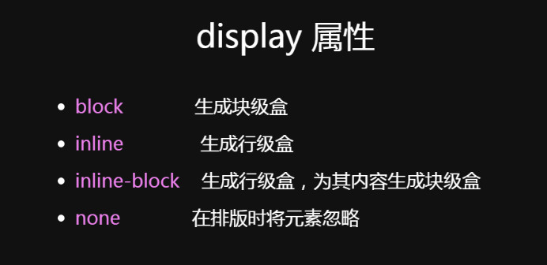

走进盒子模型
盒模型定义：文档中的每个元素都被构造成文档布局内的一个矩形盒子。每个盒子（框）由四个部分（或区域）组成，由它们各自的边界定义：内容边界，内边距边界，边框边界和外边距边界。
块级元素、 行内级元素、行内块级元素
● 常用行内级元素：<span>、<strong>、<br>、<a>、<img>、<label>、<input>、<select>、<textarea>
● 常用块级元素：<div>、<hx>、<p>、<ul>、<dl>、<form>、<header>、<article>、<section>、<aside>、<footer>、<table>、<th>、<tr>、<td>
● 常见行内块级元素：<img>（替换元素）、<input> （替换元素）

块级元素（独占一行）：占满一行；前后各有一个换行；。
块级元素不设置宽度，那么宽度将默认变为父容器的100%。
块级元素不设置高度，那么高度默认为包裹内容的高度，或者说容器内的孩子会将容器的高度撑起来。
行内元素：一行显示，直到这一行排满才会显示下一行（在元素内换行）。不能设置宽高属性，忽略垂直方向的padding、margin。
行内元素默认宽高为内容宽高（宽度由字体、字号决定，高度由字体、字号和行高决定）。
inline-block：按行内元素显示方式显示（不同的是整块元素会换行显示），可以像块级元素一样设置宽高和padding、margin。
只有width、height和margin能为auto!所以没有padding: 0 auto!
border、padding和margin的默认值为：0！
width的值为百分比时，参考的是父元素盒子的width。
height的值为百分比时，参考的是父元素盒子的height。height不适用百分比单位，会被浏览器忽略。原因：如果父元素height为auto，只要子元素在文档流中（即position不等于fixed或者absolute），子元素height设置百分比值会完全被忽略了。
padding的值为百分比时，参考的是父元素的width。
margin的值为百分比时，参考的是父元素的width。
border的值无法设置为百分比！border设置边框宽度会忽略百分比单位。
背景会应用于由内容和内边距，边框组成的区域。
宽高属性对正常流的行内非替换元素无效,对块级元素和替换元素有效。
只设置宽可以让替换元素成比例变化，也可以只设置高可以让替换元素成比例变化。
如果一个块级元素的上、下外边距设置为auto，上、下外边距会自动计算为0。左右设置为auto则会在父元素内垂直居中。margin: auto; 等同于margin: 0 auto;。
margin:0 auto只对块级元素生效。
使用margin: 0 auto;时不管有没有内容，前提一定要有固定宽度的width。
margin:0 auto对具有包裹性的元素（即脱离标准流的元素）无效，就好比父元素所在的标准流比喻成地表，那包裹性元素就已经上天了。没有了可供参考的父元素宽度进行auto
子块级元素不会继承父块级元素的宽高。一般地，大多数盒子模型属性不会被继承。如果在容器元素上设置这些属性并让它们由每个子元素继承，那么样式/布局会发生混乱。
替换元素与非替换元素
替换元素就是作为其他内容的占位符，浏览器根据元素的标签和属性，来决定元素的具体显示内容。
CSS渲染模型不考虑替换元素内容的渲染。
<img>、<input>、<textarea>、<select>、<object>、<video>等都是替换元素。
块级元素：也有替换元素与非替换元素之分->比如：嵌入的文档（<iframe>之类），还有<audio>和<canvas>、<option>在某些特定情形下也是替换元素。
替换元素和非替换元素是已经被替换(CSS不负责其展示渲染,由其固有属性替换接管渲染)和不会被替换(由CSS负责展示渲染)，而不是可不可以被替换的概念，不能翻译为可替换元素和不可替换元素。
W3C 标准盒模型和 IE 盒模型（怪异盒模型）
css3新增的 box-sizing 属性的值 content-box 就是标准盒模型，border-box 就是 IE 盒模型。
box-sizing 属性设置width,height延伸的区域，通常用于响应式布局。
W3C 标准盒模型（content-box）：属性 width 和 height 只包含 content，不包括 border 和 padding
IE 盒模型（border-box）：属性 width 和 height 包含 border 和 padding，指的是 content + padding + border
也就是box-sizing: border-box 时，只要固定宽高，无论加padding或border都不会改变原来的宽高

水平格式化（水平布局）、垂直格式化（垂直布局）
水平格式化与垂直格式化前提是子元素在文档流中
对于正常流的一个元素，包含块由最近的块级元素祖先框、表单元格或行内块祖先框的内容边界（content edge）组成。
水平格式化（水平布局）
块级元素的 width 默认为100%撑满父元素，行内元素根据其自身的内容或子元素来决定其宽度。
margin-left + border-left+ padding-left +width（width变为with:100% → 子元素内容区宽度变为父元素内容区宽度） + padding-right + border-right + margin-right = 父元素内容区width（包含块宽度）
auto：在水平格式化中弥补水平部分实际值与水平部分总和的差距。（简单理解：自动填充剩余空间） 其他：没有父元素时自动根据内容确定所需长度。
一个水平外边距为具体值，另一个水平外边距和width设为auto，设置auto的水平外边距减为0。
垂直格式化（垂直布局）
一个元素的默认高度由其内容决定。（即height: auto;）
块级元素不设置高度，那么高度默认为包裹内容的高度，或者说容器内的孩子会将容器的高度撑起来。
margin-top + border-top+ padding-top +height （height变为height:100%→ 子元素内容区高度变为父元素内容区高度）+ padding-bottom+ border-bottom + margin-bottom = 父元素内容区height（包含块高度度）
如果一个块级元素的上、下外边距设置为auto，上、下外边距会自动计算为0，影响：正常流块级元素无法在包含块中垂直居中。
办法：父元素指定高度后，子元素上、下外边距设置为25%
块级父元素高度为auto,只包含块级子元素时：
1.块级父元素没设置上内边距或下内边距，或者上边框或下边框，块级父元素内容区的高度不包括块级子元素的外边距。
2.块级父元素设置了上内边距或下内边距，或者上边框或下边框,块级父元素内容区的高度才包括块级子元素的外边距。
垂直外边距合并问题
解决方案总结：
1、两相邻兄弟元素的上下外边距合并：在兄弟元素外面包裹一层容器，并触发该容器生成一个BFC。也可以只设置一个元素的边距值。
2、父子元素的上下外边距合并：在父元素中添加:overflow:hidden;或者overflow：auto；使其父元素形成一个BFC。也可以在父元素中添加border：1px solid；或是padding：1px。
3、空块级元素的上下外边距合并：设置border，padding，height其中一个属性即可。
总结：为了防止外边距合并，善于使用父亲的padding，而不是儿子的margin，最好不要用这个marign表达父子之间的距离。
BFC-- Block Formatting Context


布局规则
1. 内部的Box会在垂直方向，一个接一个地放置。
2. Box垂直方向的距离由margin决定。属于同一个BFC的两个相邻Box的margin会发生重叠。
3. 每个元素的margin box的左边， 与包含块border box的左边相接触(对于从左往右的格式化，否则相反)。即使存在浮动也是如此。
4. BFC的区域不会与float box重叠。
5. BFC就是页面上的一个隔离的独立容器，容器里面的子元素不会影响到外面的元素。反之也如此。
6. 计算BFC的高度时，浮动元素也参与计算。
BFC触发条件
1. 根元素
2. 浮动 float: left/right/inherit
3. 绝对定位元素 position: absolute/fixed
4. 行内块 display: inline-block
5. 弹性盒子 display: flex/inline-flex
6. 溢出元素 overflow: hidden/scroll/auto/inherit
7. 表格单元格 display: table-cell（HTML表格单元格默认属性）
8. 表格标题 display: table-caption（HTML表格标题默认属性）
应用场景
● 闭合浮动：浮动区域不叠加到BFC区域上
● 防止与浮动元素重叠
● 防止margin collapse
● float 元素高度塌陷

IFC -- Inline Formatting Contexts
触发条件
一个块级元素中仅包含行内级元素。
布局规则
● 盒子一个接一个的在水平方向摆放，当容器宽度不够时就会换行；
● 每一行将生成一个匿名行盒（line box），包括该行的所有行内级盒；
● 水平方向上，当所有盒的总宽度小于匿名行盒的宽度时，那么水平方向排版由 text-align 属性来决定；
● 垂直方向上，行内级盒的对齐方式由 vertical-align 控制，默认对齐为 baseline；
● 行盒的高度由内部子元素中实际高度最高的盒子计算出来，值得注意的是，行内盒（inline boxes）的垂直的 border，padding 与 margin 都不会撑开行盒的高度。
● 如果一个行级块无法分割（单词、inline-block）,该元素会被作为一个整体决定分布在哪一个行盒。
注意：在 IFC 的环境中，是不能存在块级元素的，如果将块级元素插入到 IFC 中，那么此 IFC 将会被破坏掉变成 BFC，而块级元素前的元素或文本和块级元素后的元素或文本都会自动产生一个匿名块盒子将其包围，这在前面匿名块盒的时候已经讨论了。
● 匿名块盒子（Anonymous block box)：匿名盒子不能被CSS选择符选中，但是可以从父元素那里继承那些可继承的属性。
1、包含块盒子可能只包含行内级盒子，也可能只包含块级盒子。但通常的文档都会同时包含两者，在这种情况下，就会在行内级盒子外创建匿名块盒子。


2、一个行内盒子中包含一或多个块盒子时，行内盒子与所包含的块盒子前后的行内盒子都会变成匿名块盒子。下图，所包含的块盒子（<span>）的盒子会将行内盒子(<p>)拆分为两个行内盒子，分别位于块盒子的前面和后面。块盒子前面的所有行内盒子（<em>）会被一个匿名块盒子包裹，块盒子后面的行内盒子（文本）也是一样。这两个盒子又分别被匿名块盒包含，因此，块盒子将成为这两个匿名块盒子的兄弟盒子。

应用场景
● 水平居中：当一个子块要在环境中水平居中时，设置其为 inline-block 则会在外层产生 IFC，通过设置父容器 text-align:center 则可以使其水平居中。
● 垂直居中：创建一个IFC，用其中一个元素撑开父元素的高度，然后设置其 vertical-align:middle，其他行内元素则可以在此父元素下垂直居中。
水平居中
1.行内元素水平居中
利用 text-align: center 可以实现在块级元素内部的行内元素水平居中。
2.块级元素的水平居中
①margin:0 auto;
②利用absolute+transform(子绝父相) 子元素设置，子元素水平居中
position:absolute;
left:50%;
transform:translateX(-50%);
③块级元素的水平居中和多块级元素水平居中 父元素设置，子元素水平居中
display: flex;
justify-content:center;
3.浮动元素水平居中
①定宽的非浮动元素：子元素设置relative + 负margin自己宽度的一半

②不定宽的浮动元素：清除浮动，父子div都相对定位
float:left;
position:relative;
left:50%;

③通用flex布局(不管是定宽还是不定宽)
父元素设置，子元素居中
display:flex;
justify-content:center;
4.绝对定位的子元素水平居中(子绝父相)
width: 200px;
position: absolute; /*绝对定位*/
margin: 0 auto; /*水平居中*/
left: 0; /*此处不能省略，且为0*/
right: 0;/*此处不能省略，且为0*/
子元素充满了容器，同时自身指定了宽度，margin设置为auto的时候，左右边距会平分，元素自然就居中了，垂直居中原理一致。
垂直居中
行内元素垂直居中
单行行内元素垂直居中，父级div
height: 120px;
line-height: 120px;
多行行内元素垂直居中
父子div元素都设置line-height（父元素line-height>子元素 line-height） 子元素div设置 display: inline-block; 和 vertical-align: middle;
父元素div设置 display:table; 子元素div设置 display: table-cell; 和 vertical-align: middle;
display: flex;
flex-direction: column;
justify-content: center;
块级元素垂直居中
①使用absolute+负margin(已知高度宽度)
position: absolute;
top: 50%;
height: 100px;
margin-top: -50px;
②使用absolute+transform
position: absolute;
top: 50%;
transform: translateY(-50%);
③使用flex+align-items，父元素设置，子元素垂直居中
display:flex;
align-items:center;
盒子垂直居中
1、子元素自我垂直居中：根据盒子计算，原来height设置的是150px，(原来的height)150px-(padding-top)60px=(现在的height)90px和 padding-top 完成垂直居中效果。
2、父元素指定高度后，子元素上、下外边距设置为25%
浮动
清除浮动，一般有clear: both/left/right和overflow: hidden。首选clear，如果目标区块存在溢出元素时，会被overflow: hidden截断。